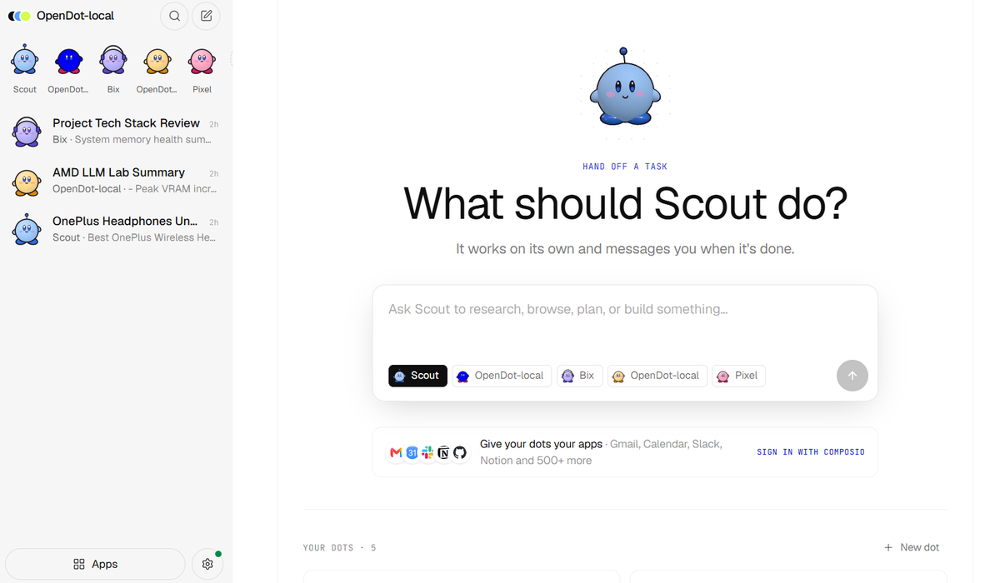
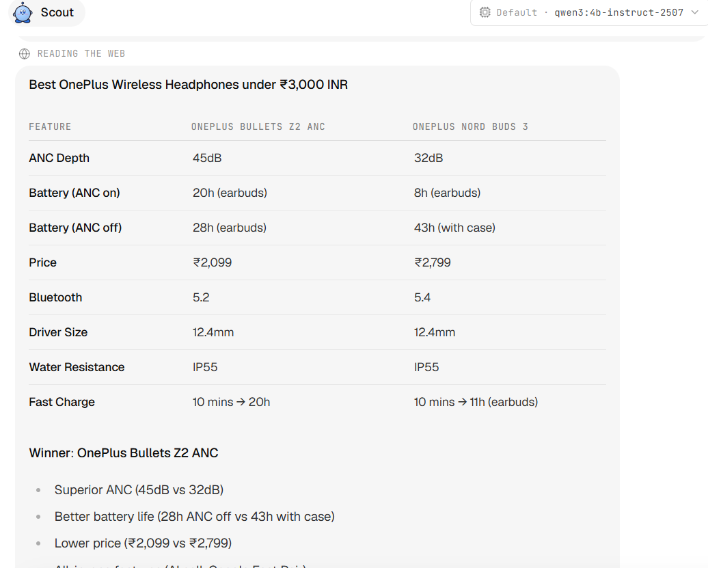

Your Personal AI Agent,
Running 100% On Your Desktop.
Open-Dot is an autonomous, open-source AI desktop assistant powered by local Ollama models (qwen3:4b). Zero cloud costs, zero API keys required, and full control over your code, browsing, and files.
See Open-Dot in Action
Switch seamlessly between the lightweight animated preview and the full 1080p HD recording.

Built for Privacy, Speed, & Control
Everything runs locally on your PC. No third-party servers see your prompts, files, or login credentials.
Local Ollama Engine
Locked to your choice of local models like qwen3:4b-instruct-2507 or custom models. Zero cloud latency or monthly subscriptions.
Autonomous Web & Shopping
Researches products, compares prices, parses web pages, and extracts structured comparison tables with verified source links.
Human-in-the-Loop Security
Hardened security rules. Dangerous shell commands or workspace edits require your explicit approval via interactive card controls.
Workspace & Code Analysis
Reads local repositories, inspects dependencies, extracts PDFs, and writes code cleanly inside your local workspace.
Native Hardware Vault
Secrets and credentials are encrypted locally with hardware protection (DPAPI on Windows, Keychain on macOS).
Local SQLite & BM25 Search
Full local storage for conversations, memories, and vector evidence using native Node.js SQLite (`node:sqlite`).
Explore the Interface
Click any screenshot below to inspect the full interface in high resolution.

Main Handoff Dashboard
Delegating tasks to autonomous agent dots.

Agent Fleet (Scout, Bix, Pixel)
Multi-agent delegation and task history.

Shopping & Price Research
Structured price and feature comparison tables.

Web Page Reader
Summarizes long articles and documentation URLs.

Code & Tech Stack Inspection
Reads workspace files and package dependencies.

Ollama AI Engine Settings
Displays active model connection and hardware status.
Get Started with Open-Dot Today
Free, open-source, and ready to install on Windows or run directly from source code.
Windows Desktop Package
Download the standalone installer (`.exe`) compiled directly for 64-bit Windows systems.
Run from Source (pnpm)
Clone the repository and launch the local dev runtime: